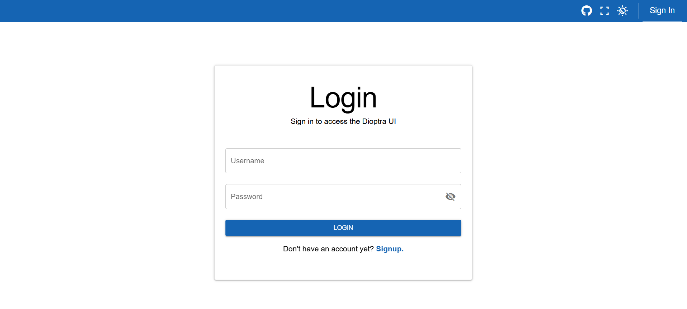
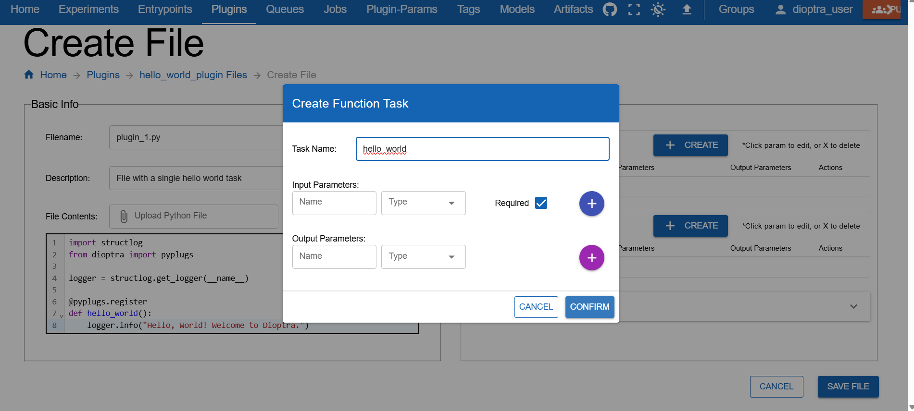

Guidelines for Documentation#
This is a guide for Dioptra developers that details style and content guidelines for Sphinx documentation pages.
Dioptra documentation uses reStructuredText (.rst) with Sphinx. The documentation pages are located in docs/source/
and are built using the command uvx tox run -e web-compile,docs.
Table of Contents
Exemplar Documentation Pages#
The following pages serve as reference implementation for future documentation pages:
Documentation goals#
Brevity & placement. Put content where it belongs; avoid duplication across types.
Single purpose per page. Don’t mix a tutorial with reference or explanation on the same page.
Source of truth lives in code dirs. Bring example code in with
literalinclude.Cross Reference Documentation. Don’t repeat information across pages - reference relevant complimentary materials using Sphinx cross references instead.
Documentation File Placement#
This is the current proposed structure for storing documentation static assets.
Image Files#
All images should be stored in docs/source/images/. Avoid storing images inside the specific documentation folders (e.g., avoid docs/source/tutorials/images).
Directory Structure
- Screenshots: Store screenshots in
docs/source/images/screenshots/. Organize these sub-folders roughly by the Vue/Quasar page they represent (e.g., jobs, plugins, experiments).
This structure allows screenshots to potentially be reused across different content types (e.g., using the same “Login” screenshot in both a Tutorial and a How-to).
It also makes identifying screenshots that require updates easier once a Quasar page changes.
- Screenshots: Store screenshots in
Figures: Store conceptual diagrams, architecture flows, and non-GUI visuals in
docs/source/images/figures/.
docs/source/images/
├── screenshots/
│ ├── entrypoints/
│ ├── experiments/
│ ├── jobs/
│ ├── login/
│ ├── plugins/
│ └── ...
└── figures/
├── entrypoint_diagram.png
├── experiment_overview.png
└── ...
Documentation Code Snippets#
Code will ideally never be written inline on .rst pages. Whenever appropriate, the documentation should reference the doc strings for methods and classes.
When bespoke code snippets are needed (i.e. for tutorial workflows, etc), place the code in the appropriate subdirectory directory under docs and use .. literalinclude:: to pull it in.
Directory Structure
Documentation code that is not meant to be run in production or in a standalone manner lives in docs/source/documentation_code/.
Within this directory:
Client Workflows: Python scripts demonstrating the Python Client API (e.g., connecting, authenticating, submitting jobs).
Plugins: Python files with plugin tasks and artifact tasks.
Artifact Task Graphs: YAML files with artifact task graphs
Task Graphs: YAML files with entrypoint task graphs
Current Directory Structure:
docs/source/documentation_code/
├── client_workflows/
│ ├── import_plugins.py
│ └── client_setup.py
├── artifact_task_graphs/
├── task_graphs/
└── plugins/
├── essential_workflows_tutorial
└── hello_world_tutorial
Diátaxis content types#
Content is organized according to the Diátaxis framework:
Tutorials
How-to guides
Reference
Explanation
The following principles apply the Diátaxis framework to Dioptra documentation:
Tutorials (learning by doing)#
Learn by doing
Provide early wins for users with small accomplishments
Tell readers upfront what to expect (“In this tutorial, you will build a plugin that…”)
Give feedback along the way (“You should see…”)
Minimize explanation — link out to other docs instead
How-to guides (solve a task)#
Cookbook style - a recipe / procedural workflow to accomplish a specific goal
One outcome per page
Concise, no digressions
Reference (facts)#
Precise, factual
No steps or advice
Covers APIs, schemas, configs, syntax, requirements, etc
Explanation (concepts & why)#
Provide background and rationale
Cover trade-offs and mental models
No steps
“Read once” and then never read again (ideally)
Each documentation page should align with one of these types.
The Table of Contents headers reflect these types:
“What is Dioptra” → Explanation
“Setup” → How To
“Explainers” → Explanation
“Tutorials” → Tutorials
“How Tos” → How To
“Reference” → Reference
Style guide for RST documents#
The following collection details styling components—custom-defined or provided by Sphinx—used in Dioptra documentation.
Note
Custom CSS
Custom CSS classes are defined in files in docs/assets/scss/ and imported into dioptra.scss. These scss files are compiled
when the docs are built with uvx tox run -e web-compile,docs and create the resulting docs/source/_static/dioptra.css file.
Note
Custom JavaScript
Custom javascript code exists in docs/source/_static/.
These assets are loaded via docs/conf.py using html_css_files and html_js_files to point to CSS and JS code in the _static directory.
Section hierarchy#
Headings should be nested consistently.
=for page title-for H2~for H3^for H4
Put these symbols under text to create a heading. The heading is automatically included in the right side table of contents.
Header Example:
.. _doc-type-doc-title-my-example-header:
My Example Header
-------------------
Section contents...
.. _doc-type-doc-title-my-example-subheader:
My Example Subheader
~~~~~~~~~~~~~~~~~~~~
Section contents .. (nested under "My Example Header" in ToC)
See also
See cross-references section below to understand cross reference labels used in this example.
Steps (Linkable Headers on a Card)#
When documenting steps for a tutorial or how-to guide, make the step name a header and use two CSS classes to place the steps onto a card. This makes them linkable and easy to visually distinguish.
Custom CSS classes:
header-on-a-card- puts the entire section on a card with slight padding and box shadowheader-steps- Adds the blue clipboard to the header and the bottom border, and adjusts the header font size
RST Syntax: Steps#
.. rst-class:: header-on-a-card header-steps
Example Step 1: Create the Plugin Container
^^^^^^^^^^^^^^^^^^^^^^^^^^^^^^^^^^^^^^^^^^^^^
1. Open **Plugins**.
2. Click **Create Plugin**.
3. Name it and **Save**.
.. note:: Make sure you click save.
.. rst-class:: header-on-a-card header-steps
Example Step 2: Add a file
^^^^^^^^^^^^^^^^^^^^^^^^^^^^^^^^^^^^^^^^^^^^^
1. Click on the Plugin
2. Click **Add a File**
3. Click **Register Task** and create these inputs:
* ``sample_size`` : int
* ``mean`` : float
4. Click **Save**
.. admonition:: Learn More
* :ref:`plugins-explanation` - Learn about plugins
Rendered Example: Steps#
The above RST code is rendered below:
Example Step 1: Create the Plugin Container#
Open Plugins.
Click Create Plugin.
Name it and Save.
Note
Make sure you click save.
Example Step 2: Add a file#
Click on the Plugin
Click Add a File
Click Register Task and create these inputs:
sample_size: intmean: float
Click Save
Learn More
Plugins - Learn about plugins
Notes for “Steps” styling#
Note the following stylistic conventions when rendering steps:
Use of bold to emphasize the concrete actions within a step (corresponds to buttons, etc)
The creation of separating lines between header-steps classes is automatically done through a CSS rule
- You can nest other classes / structures within the header-steps & header-on-a-card class, but use sparingly.
Items commonly nested on cards include:
.. admonition:: Learn More- Custom “learn more” override of the admonition box.. note::- Built in Sphinx blue Sphinx box that says “Note”Indentation to create a block quote
Warning
Once you use a custom header-on-a-card class, the card container will continue until the next header.
This is how .. rst-class:: header-on-a-card header-steps works - the styling wraps the entire next
header in a styled div that continues until the next header.
“See Also” (Linkable Headers on a Card)#
To create a prominent section of additional reading material, use the custom RST classes
header-on-a-card combined with header-seealso. This will create
a lightly indented card with a green header that also has an anchor link and appears in the HTML
sidebar.
RST syntax: See Also#
.. rst-class:: header-on-a-card header-seealso
See Also
^^^^^^^^^^^^^^^^^^^^^^^^^^^^^^^^^^^^^^^^^^^
This is a hands-on tutorial intended to walk a user through the procedural steps required to
use Dioptra. The following resources are complimentary and provide high level explanations on Dioptra's
design and motivation.
* :ref:`Overview of Experiments <explanation-experiments-and-jobs>` - A summary of how Dioptra components interact to create an experiment
* :ref:`Workflow Architecture <explanation-workflow-architecture>` - An overview of how all the high level Dioptra components orchestrate together to execute jobs.
* :ref:`Why Dioptra? <explanation-why-use-dioptra>` - An explanation of what Dioptra was built for
Rendered Example: See Also#
See Also#
This is a hands-on tutorial intended to walk a user through the procedural steps required to use Dioptra. The following resources are complementary and provide high level explanations on Dioptra’s design and motivation.
Overview of Experiments - A summary of how Dioptra components interact to create an experiment
Workflow Architecture - An overview of how all the high level Dioptra components orchestrate together to execute jobs.
Why Dioptra? - An explanation of what Dioptra was built for
Notes, warnings, important, and “see also”#
To caveat steps or reference explanation/reference material elsewhere, use notes, warnings, and the important flag. These divs are built in to Sphinx. While visually distinct, they utilize significant padding to indicate optional content. Use them sparingly for information that is not required reading.
Note
This tutorial uses the web UI; you can do the same via API or TOML.
Warning
Make sure the queue is Public or jobs won’t start.
Important
In YAML, null is interpreted as the null value. Therefore, it does not name the null type!
See also
View the Plugins for more information.
.. note::
This tutorial uses the **web UI**; you can do the same via **API** or **TOML**.
.. warning::
Make sure the queue is **Public** or jobs won’t start.
.. important::
In YAML, null is interpreted as the null value. Therefore, it does not name the null type!
.. seealso::
View the :ref:`plugins-explanation` for more information.
Nesting these elements in other cards or containers can result in visual clutter. Overusing these elements can result in visual clutter as well. These elements don’t provide anchor links, so don’t use them for major sections as they won’t be embedded in the table of contents.
Placing items in the margin#
Important, note, warning and “see also” boxes can be placed in the margin with the following syntax.
RST source code
.. margin::
.. important::
The NGINX SSL/TLS disabled and enabled tabs are just snippets.
The snippets omit the lines that come both before and after the ``healthcheck:`` and ``ports:`` sections.
**Do not delete these surrounding lines in your actual file!**
The Sphinx table of contents sidebar automatically collapses when it would be interfering with a box in the margins. On narrow screens, these elements are hidden and require horizontal scrolling.
“Learn More” - Minimalistic div for more information#
Custom CSS rules were created to define a minimalistic presentation for extra information.
This class overrides the admonition box when the title “Learn More” is added.
The use of this class is preferred to the .. seealso:: built in Sphinx element when used inside
another element.
Learn More
View the Plugins for more information.
.. admonition:: Learn More
View the :ref:`plugins-explanation` for more information.
This is similar to the .. seealso:: built in Sphinx box, but it has more minimal padding and is more appropriate
to use nested inside other elements.
Shaded container for Table of Contents#
Custom CSS rules were created to define a lightly shaded container with a larger width. This container is used for table of contents (TOC) elements in index pages, but could be reused for other elements as well.
Table of Contents:
In production documentation pages, use .. toctree:: to incorporate
the TOC into the global navigation system.
.. container:: wide-lightly-shaded
.. toctree::
:maxdepth: 1
:titlesonly:
:caption: Table of Contents
/dev-guide/contributing-documentation-guide
/reference/glossary
/reference/dioptra-components/index
In this example, however, doc references were used to avoid actually adding these pages to the global navigation.
**Table of Contents:**
* :doc:`/dev-guide/contributing-documentation-guide`
* :doc:`/dev-guide/contributing-merge-request-guidelines`
* :doc:`/dev-guide/contributing-commit-styleguide`
Page Contents / Local ToC#
To preview the contents on a page in a Table of Contents container, use the .. contents:: component.
View the top of this page to see this rendered.
.. contents:: Contents
:local:
:depth: 1
Figures (screenshots)#
Screenshots should be cropped and zoomed for readability. Always include :alt: text.
Custom CSS and JavaScript are available for images.
To apply this styling, use one or more of the following figure classes with :figclass::
border-image→ Adds a light border, shadow, and backgroundclickable-image→ Makes the image interactive with cursor + modal supportbig-image→ Allows images to grow wider than the text column (experimental; CSS overrides may conflict with sidebar/layout changes — use sparingly)
Note
Modals are included by default through the addition of a div element in the layout.html footer.
RST Syntax: Image Classes#
Screenshots that use combinations of these three CSS classes
On click, JavaScript shows the modal div element.
**Using** ``border-image`` **and** ``clickable-image``:
.. figure:: ../tutorials/hello_world/_static/screenshots/login_dioptra.png
:alt: Dioptra login screen
:figclass: border-image clickable-image
Using the custom image class - clicking the image opens a modal.
**Using** ``big-image``, ``border-image`` **and** ``clickable-image``:
.. figure:: ../tutorials/hello_world/_static/screenshots/register_hello_world_task.png
:alt: Dioptra login screen
:figclass: border-image clickable-image big-image
Using the ``big-image`` figclass - not recommended because it interferes
with the HTML sidebar.
Rendered Examples: Image Classes#
Using border-image and clickable-image:

Using the custom image class - clicking the image opens a modal.#
Using big-image, border-image and clickable-image:

Using the big-image figclass - not recommended because it interferes
with the HTML sidebar.#
Warning
Making images larger than the text column with big-image is potentially fragile and relies on CSS workarounds.
It may look odd with different sidebar widths or screen sizes. Prefer standard-sized images unless
the extra width is necessary for readability.
Literal includes#
Use literalinclude to pull code from the repo instead of pasting it:
hello_world.py:
1import structlog
2from dioptra import pyplugs
3
4logger = structlog.get_logger(__name__)
5
6@pyplugs.register
7def hello_world():
8 logger.info("Hello, World! Welcome to Dioptra.")
**hello_world.py**:
.. literalinclude:: ../../../docs/source/documentation_code/plugins/hello_world_tutorial/hello_world.py
:language: python
:linenos:
Custom Code Block Styling#
Custom CSS classes are available to style code blocks for improved visual separation and language-specific branding. Font size is also reduced to save space for long code blocks. Apply these classes using the standard Sphinx admonition directive.
Available Classes
Use the following classes with an .. admonition:: block:
code-panel: The base class. This applies the custom box, rounded corners, shadow, and reduced font size.python: Applies the custom dark blue title bar, yellow border, and the >>> prompt prefix.yaml: Applies the custom dark brown title bar, dark border, and the >> prompt prefix.console: Applies custom dark theme and the $ prompt prefix.
<My Python LiteralInclude>
1import numpy as np
2import structlog
3from dioptra import pyplugs
4
5LOGGER = structlog.get_logger()
6
7# Helper function - not registered as a Dioptra plugin task
8def sqrt(num:float)->float:
9 return np.sqrt(num)
10
11@pyplugs.register
12def sample_normal_distribution_print_mean(
13 random_seed: int = 0,
14 mean: float = 0,
15 var: float = 1,
16 sample_size: int = 100) -> np.ndarray :
17
18 rng = np.random.default_rng(seed=random_seed)
19 std_dev = sqrt(var)
20 draws = rng.normal(loc=mean, scale=std_dev, size=sample_size)
21 draws_mean = np.mean(draws)
22 diff = np.abs(mean-draws_mean)
23 pct = 100*diff/mean
24
25 LOGGER.info(
26 "Plugin 2 - "
27 f"The mean value of the draws was {draws_mean:.4f}, "
28 f"which was {diff:.4f} different from the passed-in mean ({pct:.2f}%). "
29 "[Passed-in Parameters]"
30 f"Seed: {random_seed}; "
31 f"Mean: {mean}; "
32 f"Variance: {var}; "
33 f"Sample Size: {sample_size};"
34 )
35
36 return draws
<My YAML LiteralInclude>
draw_samples:
task: sample_normal_distribution
args: []
kwargs:
random_seed: 0
mean: $mean # User parameter
var: $var # User parameter
sample_size: $sample_size # User Parameter
log_stats_1:
task: print_stats
args: []
kwargs:
input_array: $draw_samples.output # This is the output from Task 1
plugin_step_name: "Task 1: Drawing from normal distribution"
add_noise_step:
task: add_noise
args: []
kwargs:
input_array: $draw_samples.output # This is the output from Task 1
random_seed: 0
var: 10
mean: 0
noise_type: normal
log_stats_2:
task: print_stats # Invoking this plugin task again with different input_array
args: []
kwargs:
input_array: $add_noise_step.output # This is the output from Task 3
plugin_step_name: "Task 2: Adding Noise"
transform_step:
task: nonlinear_transform
args: []
kwargs:
input_array: $add_noise_step.output
transform: $transform_type # User Parameter
log_stats_3:
task: print_stats # Invoking this plugin task a third time
args: []
kwargs:
input_array: $transform_step.output # This is the output from Task 5
plugin_step_name: "Task 3: Transforming the array"
<My Console Input/Output>
Plugin 1 was successfully completed. Output value was .7432 with parameter "random".
.. admonition:: <My Python LiteralInclude>
:class: code-panel python
.. literalinclude:: ../../../docs/source/documentation_code/plugins/essential_workflows_tutorial/sample_normal.py
:language: python
:linenos:
.. admonition:: <My YAML LiteralInclude>
:class: code-panel yaml
.. literalinclude:: ../../../docs/source/documentation_code/task_graphs/essential_workflows_tutorial/sample_and_transform.yaml
:language: yaml
.. admonition:: <My Console Input/Output>
:class: code-panel console
.. code-block:: console
Plugin 1 was successfully completed. Output value was .7432 with parameter "random".
Note
Use unique comments, such as # [docs:start] and # [docs:end], in Python files
(or the appropriate comment style for other languages)
to only grab sections of code. These tags must be present in the code files.
In literalincludes, use the following syntax:
.. literalinclude:: python_file.py
:language: python
:start-after: # my-start-comment
:end-before: # my-end-comment
Tabs for alternate paths#
Tabs can be used for alternate instructions (e.g., GUI vs. Python client), as demonstrated below.
Login using the GUI
Login using the Python client API
LOCAL_PATH = 'http://127.0.0.1'
from dioptra.client import connect_json_dioptra_client
client = connect_json_dioptra_client(LOCAL_PATH)
client.users.create(username=USER_NAME, email=USER_EMAIL, password=USER_PASSWORD)
client.auth.login(USER_NAME, USER_PASSWORD)
Create a plugin in the GUI
Create a plugin using the Python client.
plugin = client.plugins.create(group_id,
"hello",
"This is a Hello World Plugin")
.. tabs::
.. group-tab:: GUI
Login using the GUI
.. figure:: ../tutorials/hello_world/_static/screenshots/login_dioptra.png
:alt: Dioptra login screen
:width: 900px
:figclass: border-image
.. group-tab:: Python Client
Login using the Python client API
.. code-block:: python
LOCAL_PATH = 'http://127.0.0.1'
from dioptra.client import connect_json_dioptra_client
client = connect_json_dioptra_client(LOCAL_PATH)
client.users.create(username=USER_NAME, email=USER_EMAIL, password=USER_PASSWORD)
client.auth.login(USER_NAME, USER_PASSWORD)
.. tabs::
.. group-tab:: GUI
Create a plugin in the GUI
.. figure:: ../tutorials/hello_world/_static/screenshots/register_hello_world_task.png
:alt: Dioptra login screen
:width: 900px
:figclass: border-image
.. group-tab:: Python Client
Create a plugin using the Python client.
.. code-block:: python
plugin = client.plugins.create(group_id,
"hello",
"This is a Hello World Plugin")
Note
To have tabs synchronize together (like above example), use the .. group-tab:: syntax
and make sure the tabs are named the exact same thing across iterations, i.e. .. group-tab:: Python Client
wil be synchronized with another instanced of .. group-tab:: Python Client. If synchronization is not required, replace
group-tab with tab.
Cross-references#
Use explicit references (.. _label-name:) together with :ref:.
This is the most reliable way to link between pages, since it does not
depend on the document being in a .. toctree::. Note that displayed link text is equal to the page
title but can be overridden using the <> syntax (see example).
See more about Prepare Your Deployment in the dedicated page.
See more about My custom reference name for the same page in the dedicated page.
See more about :ref:`how-to-prepare-deployment`
in the dedicated page.
See more about :ref:`My custom reference name for the same page <how-to-prepare-deployment>`
in the dedicated page.
Note
To make a :ref: work, the target document must define a label
(.. _label-name:) in the .rst file. Without a label, :link-type: ref cannot resolve.
Place the label near the top of the file you want to link to. For example:
.. _tutorial-1:
Tutorial 1
==========
Continue with the rest of the document...
.. _tutorial-1-header-2:
Tutorial 1 Header 2:
----------------------
Continue with the rest of the document...
With those two labels in the .rst file, you could link to the page / specific section with:
:ref:`tutorial-1`
:ref:`tutorial-1-header-2`
Notice that the leading underscore is omitted when using a :ref:.
Important
To standardize the label names for .rst references, use this formula:
_{page_type}-{page_title}-{optionally: header_title}
i.e.
_{tutorial}-{running-hello-world}-{step-2-create-a-plugin}
Examples:
_how-to-create-plugins_tutorial-adding-inputs-and-outputs_reference-plugins_reference-plugins-plugin-function-tasks→ includes header_title
Notice that we only use dashes, no underscores. Use the page type in the singular, e.g. explanation, reference,
how-to, tutorial.
Additional Sphinx Elements#
The following elements are currently unused but available for documentation.
Collapsible content#
Collapsible admonitions could be used for long sections of code or optional context.
Python Plugin Code (long)
1import numpy as np
2import structlog
3from dioptra import pyplugs
4
5LOGGER = structlog.get_logger()
6
7# Helper function - not registered as a Dioptra plugin task
8def sqrt(num:float)->float:
9 return np.sqrt(num)
10
11@pyplugs.register
12def sample_normal_distribution_print_mean(
13 random_seed: int = 0,
14 mean: float = 0,
15 var: float = 1,
16 sample_size: int = 100) -> np.ndarray :
17
18 rng = np.random.default_rng(seed=random_seed)
19 std_dev = sqrt(var)
20 draws = rng.normal(loc=mean, scale=std_dev, size=sample_size)
21 draws_mean = np.mean(draws)
22 diff = np.abs(mean-draws_mean)
23 pct = 100*diff/mean
24
25 LOGGER.info(
26 "Plugin 2 - "
27 f"The mean value of the draws was {draws_mean:.4f}, "
28 f"which was {diff:.4f} different from the passed-in mean ({pct:.2f}%). "
29 "[Passed-in Parameters]"
30 f"Seed: {random_seed}; "
31 f"Mean: {mean}; "
32 f"Variance: {var}; "
33 f"Sample Size: {sample_size};"
34 )
35
36 return draws
.. admonition:: Python Plugin Code (long)
:class: dropdown code-panel python
.. literalinclude:: ../../../docs/source/documentation_code/plugins/essential_workflows_tutorial/sample_normal.py
:language: python
:linenos:
Sphinx Page Options#
Remove the page specific table of contents on the right-hand side:
Place
:html_theme.sidebar_secondary.remove:in the .rst file, ideally at the top.
Cards, grids, and callouts#
sphinx-design provides cards and grids for menus or callouts.
.. grid:: 2
.. grid-item-card:: **Run Dioptra**
:link: how-to-prepare-deployment
:link-type: ref
Step-by-step instructions for running Dioptra.
.. grid-item-card:: **Installation**
:link: explanation-install-dioptra
:link-type: ref
How to install Dioptra locally.
.. grid-item-card:: **Get Container Images**
:link: how-to-get-container-images
:link-type: ref
Download or build container images.
.. grid-item-card:: **Customize Setup**
:link: how-to-setup-options
:link-type: ref
Optional customizations.